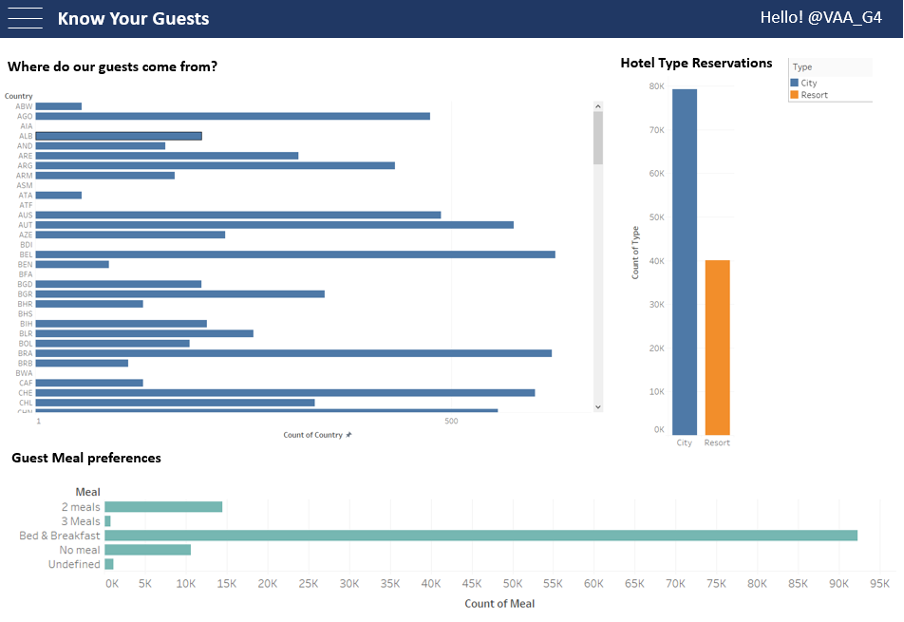
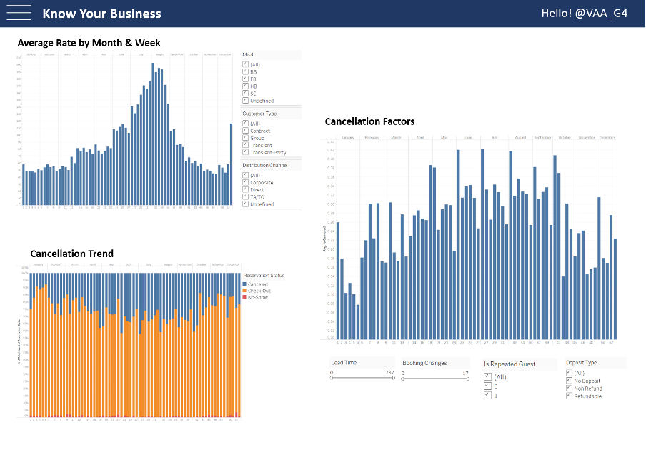
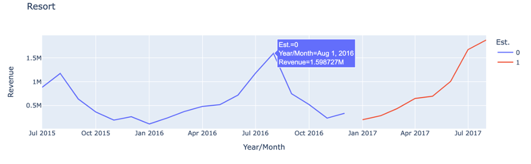
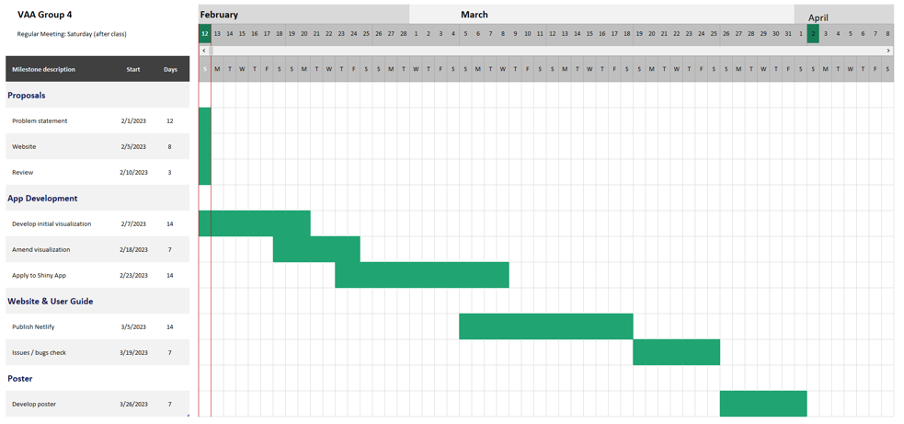

Methodology
Overview
For our Visual Analytics Project, the team will be building a shiny app to model an Operations Dashboard that can be used in the Hotel Industry. The focus of the app would be to enable interactivity and visualization of data trends and metrics relevant to Hotel Operations as well as integrate data analytics and important statistical tests.
Problem Statement
The hotel industry has been reported to be hit strong with supply chain issues, which impacted hotel operation efficiency (American Hotel & Logging Association, 2021). While early studies on Hotel Operations productivity efficiency have centred largely on revenue performance or cost-related indices using Data Envelopment Analysis (DEA), recent studies have also included hotel-specific factors like location, style of management and even macro-economic factors that can impact the overall efficiency of a hotel (Barros, 2005).
Solution
In this project, we aim to design a dashboard for hotel operators to view different operations-impactful variables to get insights related to their business. Overall, our insights and recommendations aim to improve the hotel’s business efficiency. To develop a prototype of our dashboard, we used an external dataset to model the visualization. We expect that our project’s end product of giving a holistic view of data will benefit hotel business management.
Data
Our visualizations will be based on a dataset extracted from Property Management System (PMS) of two hotels which are composed of 40,060 lines for Resort and 79,330 lines for City. The dataset has a total of 31 variables/columns, which include information on Booking, Bookings change log, Transactions, Meals, Distribution channels, Customers Profiles, Nationalities, and Market Segments.
Methodology
According to research in 2018 (Falk & Vieru, M.), various factors are related to a hotel’s cancellation rate, such as lead time to booking, residence, seasonality, group size, and order channel. We will explore these relevant factors’ distribution and focus variables through various EDA methods and appropriate modelling to determine the method for optimizing operations.
Shiny Application will be developed to feature Exploratory Data Analysis, Statistical tests and Models that would be required to feature the Operations performance of Hotels.
Data visualization methods that will be considered for use include histograms, line charts, box and violin plots, correlation matrix and statistical summary tables for models. The following R packages are expected to be used to perform both the analysis and build the visualizations using shiny: tidyverse, ggstatsplot, ggiraph, plotly, and patchwork, along with any other packages that are compatible with shiny and suitable for use in visualizations.
Storyboard
We seek to develop an app composed of mainly 3 sections: Customers, Business, and Optimization (cost and resource). We first assume that the client of this app has both city and resort hotels, users can first select their business type to start the visualization. From there, users can click three different tabs to get insights.
Moving forward in the app development phase, each visualization in mock-up page would adopt the most appropriate chart type.
Overall Storyline:
1st Page: Know Your Customers: EDA visualization
The first page will feature high-level visualizations that can offer insights into the demographics and profiles of hotel guests. For a stratified view, trellis layout will be considered. Some identified examples of the detailed visualizations are as follows:
Visualization 1 will determine the breakdown of guest nationalities and highlight the higher influx of guests. As an added layer, months over the years can be added to show the trend over the year.
Visualization 2 will look at displaying the meal preferences of guests according to count/popularity and possibly according to the nationality of guests in order to prepare operations.
Other visualizations of consideration include:
the channels and agents in which guests are making bookings for marketing operations to determine if adjustments to marketing campaigns should be made. For this visualization, a possible interactive ternary plot can be considered to display the relationship.
Displaying how long guests stay on average according to guest nationality. For this, a moving line chart or bar chart will be considered. An additional consideration would be to include a timeline over the year to introduce a factor of seasonality.

2nd Page: Know your business
The second page will focus more on the business itself. This page will give insights into factors much more closely related to revenues and operation efficiencies, such as the general trend of average rate and cancellation. There are three key visualizations to answer the following questions: How does the price of rooms change over time, what is the trend of cancellation, and what are the key factors affecting cancellation rate.
Visualization 1 will answer the price of rooms over time. The visualization will have meal, customer type, and distribution channel as filters. We aim to apply bar charts or line graphs to show the change in trend.
Visualization 2 will answer the trend of cancellation. Users can see the different percentage of cancelled, check-out, and no-show on a weekly basis through a stacked bar chart.
Visualization 3 will answer how the cancellation trend changes by adjusting different factors. We chose lead time, booking changes, is repeated guest, and deposit type as factors related to cancellation.

3rd Page: Optimize operations: Time-series forecasting
On the 3rd page, we will focus on time-series forecasting visualizations, which helps the management to make informed decisions about cost optimization, pricing and marketing. Hotel management can use this as an estimation for the next financial year and arrange logistics, staffing, and operation plans.
There will be two types of visualization included in this page:
A line chart indicating the history and the forecasted weekly revenue;
A bar chart showing the history and the forecasted weekly No. of booking. Toggles, radio buttons and drop-down lists will be used to adjust the granular level of the visualization (such as the aggregate level of time, hotel types, room types, etc).

Project Timeline
We will follow the below timeline to develop our key deliverables – Shiny app, website, user guide, and poster. Regular meetings after the class as well as additional ad-hoc meetings will be done accordingly.

Reference
Barros. (2005). Measuring efficiency in the hotel sector. Annals of Tourism Research, 32(2), 456–477. https://doi.org/10.1016/j.annals.2004.07.011 Falk, & Vieru, M. (2018).
Modelling the cancellation behaviour of hotel guests. International Journal of Contemporary Hospitality Management, 30(10), 3100–3116. https://doi.org/10.1108/IJCHM-08-2017-0509
Survey: 86% Of Hotels Say Supply Chain Issues Impacting Operations | American Hotel & Logging Association. (n.d.). https://www.ahla.com/news/survey-86-hotels-say-supply-chain-issues-impacting-operations